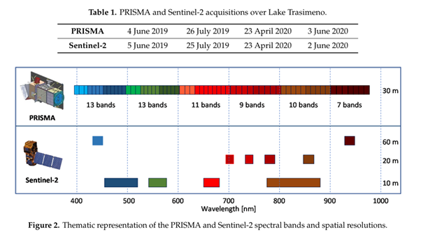
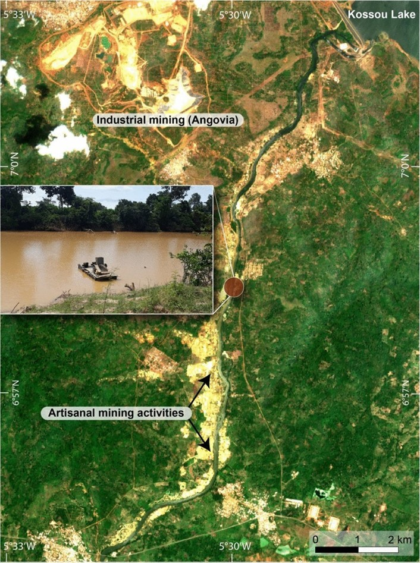
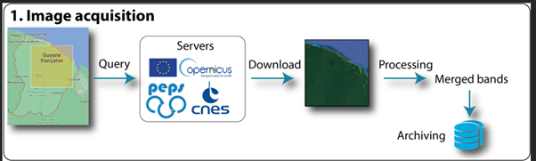
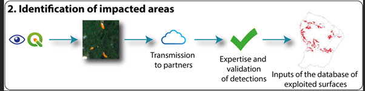

5 Galamsey
5.1 Summary
5.1.1 Introduction
The system in Ghana is a unique system where policies are mainly created by the central government. The implementation of the policy is through the ministries. The mainly create taskforce with the police to enforce it.
5.1.2 Background
For this week, I want to look at the illegal mining commonly known as Galamsey. Ghana currently battling illegal mining being a mineral rich country. These minerals especially gold contributes a major part of the nation’s GDP. This reflects in Ghana being the 6th producer of Gold in 2024. The issue comes at a time where the prices of gold are at an all-time high. (Savage et al., 2025) This is shown in the graph below.

Even though there are policies regulating mining activities, the country faces the impacts of galamsey. This is evident in the Ghana water company
5.1.3 Policy
In Ghana, the Minerals and Mining Act 703 addresses small-scale mining specifically in sections 82 to 99. A license granted by the Minister for Mines or an authorized officer is required for engaging in small-scale mining. To qualify, an applicant must be a Ghanaian citizen at least eighteen years old and registered by the Commission.
The Minister may designate areas for small-scale mining in the Gazette. District Offices of the Commission compile a register of miners, supervise operations, provide training, and facilitate the formation of Small Scale Miners Associations. Small Scale Mining Committees in designated areas assist the District Office in monitoring and promoting mining operations. Licensees must employ effective mining methods, observe safety rules, and protect the environment.
5.1.4 Insights
The policy does state how ministry and their district offices monitor the illegal mining. However, the rise in illegal activities and destruction of water bodies and land shows a gap of ineffectiveness. There are some other parties involved in monitoring the mining activities such as Environmental Protection Agency (EPA).(Kazapoe et al., 2023)
The government established an anti-galamsey task force code named Operation Halt was formed to crackdown on illegal mining activities.(“Anti-galamsey task force destroys 10 Changfans other mining equipment on Pra River,” 2024) Even though the taskforce was formed in October 2024, the illegal mining still persist with four civil society organizations calling for leadership changes.(“Anti-galamsey task force destroys 10 Changfans other mining equipment on Pra River,” 2024; “Illegal mining menace,” 2025)
5.2 Application
While the exact method the anti-galamsey taskforce uses to identify illegal mining sites is unclear, Earth Observation (EO) could support smarter, evidence-based deployment. Drawing from relevant literature, I propose a data-driven approach using remote sensing tools.
5.2.1 Paper 1: Water Quality Monitoring
Niroumand-Jadidi, et al. (2020) assessed PRISMA hyperspectral imagery for retrieving water quality parameters, comparing it with Sentinel-2. PRISMA’s more spectral bands as compare to Sentinel-2. This is shown in figure 2. This was used with the WASI (Water Colour Simulator) model to detect suspended materials. Since illegal mining is closely linked with river pollution, this makes PRISMA a powerful tool for identifying active mining areas.(Kazapoe et al., 2023).

Water contamination often reflects mining activity—thus tracking turbidity, sediment, and color changes can help pinpoint illegal operations. Ghana’s water bodies are regularly affected, and the PRISMA sensor’s hyperspectral capacity makes it suitable for detecting subtle environmental changes missed by standard multispectral sensors.

5.2.2 Paper 2 Wider Mining Impacts
Ngom et al. (2023) explored EO methods to monitor artisanal mining impacts like soil degradation, deforestation, and turbidity. Their framework illustrates how different indicators(e.g. water properties) can support policy enforcement through remote sensing. I will adopt their workflow to help the mining policy in Ghana.
5.2.3 Proposed Workflow
Building on both papers, I propose a monitoring dashboard using data from Sentinel-2 (temporal coverage) and PRISMA (detailed sensing). EO data would be processed to flag suspicious changes in land use or water quality. These would be cross-referenced by partners like the Ghana Water Company and Forestry Commission, providing ground validation. 

A refined dashboard would prioritize locations by impact, helping the taskforce deploy more strategically. This transparency could deter offenders, support early intervention, and reduce costs associated with water treatment and ecosystem restoration.
Ultimately, this system aligns with Ghana’s sustainable mining goals, protects agricultural land and water bodies, and supports SDGs 2, 6, 14, and 15.
5.3 Reflections
Illegal mining does not just affect ecosystems,it directly impacts towns and people. In Ghana, water pollution from galamsey operations have led to reduced water production by the Ghana Water Company. They stated the level of pollution is to high for they machines to treats hence closing some of the water treatment plants. Residents are also exposed to heavy metals and contaminated water, which can lead to long-term health issues.
What stands out is how Earth Observation (EO) could bridge the gap between policy and efficiency in policy enforcement. If implemented well, EO could help shift the response from reactive to proactive, targeting illegal operations before they cause irreversible damage.
The use of EO would also promote transparency—a key issue in Ghana’s mining governance. A public dashboard could build trust between citizens and government, showing that enforcement is data-driven and fair.
Finally, there’s potential for EO to empower local agencies and communities. With proper training, district assemblies could use satellite data to guide land use decisions and involve local people in environmental protection.
This week showed me that remote sensing is not just about pixels and sensors—it’s a tool for environmental justice, urban resilience, and smarter governance.
5.4 References
Anti-galamsey task force destroys 10 Changfans other mining equipment on Pra River, 2024. URL https://citinewsroom.com/2024/10/operation-halt-anti-galamsey-task-force-destroys-mining-equipment-on-river-pra/ (accessed 3.10.25).
Essah, M., 2022. Gold mining in Ghana and the UN Sustainable Development Goals: Exploring community perspectives on social and environmental injustices. Sustain. Dev. 30, 127–138. https://doi.org/10.1002/sd.2233
Illegal mining menace: Sack Minerals Commission boss – CSOs to Mahama, 2025. . GhanaWeb. URL https://www.ghanaweb.com/GhanaHomePage/NewsArchive/(accessed (3.10.25).
Kazapoe, R.W., Amuah, E.E.Y., Abdiwali, S.A., Dankwa, P., Nang, D.B., Kazapoe, J.P., Kpiebaya, P., 2023. Relationship between small-scale gold mining activities and water use in Ghana: A review of policy documents aimed at protecting water bodies in mining communities. Environ. Chall. 12, 100727. https://doi.org/10.1016/j.envc.2023.100727
Ngom, N.M., Baratoux, D., Bolay, M., Dessertine, A., Abass Saley, A., Baratoux, L., Mbaye, M., Faye, G., Yao, A.K., Kouamé, K.J., 2023. Artisanal Exploitation of Mineral Resources: Remote Sensing Observations of Environmental Consequences, Social and Ethical Aspects. Surv. Geophys. 44, 225–247. https://doi.org/10.1007/s10712-022-09740-1
Niroumand-Jadidi, M., Bovolo, F., Bruzzone, L., 2020. Water Quality Retrieval from PRISMA Hyperspectral Images: First Experience in a Turbid Lake and Comparison with Sentinel-2. Remote Sens. 12, 3984. https://doi.org/10.3390/rs12233984
Savage, S., Conboye, J., Fray, K., Adeoye, A., Bhandari, A., 2025. How illegal gold mining is fuelling a chocolate shortage. Financ. Times.